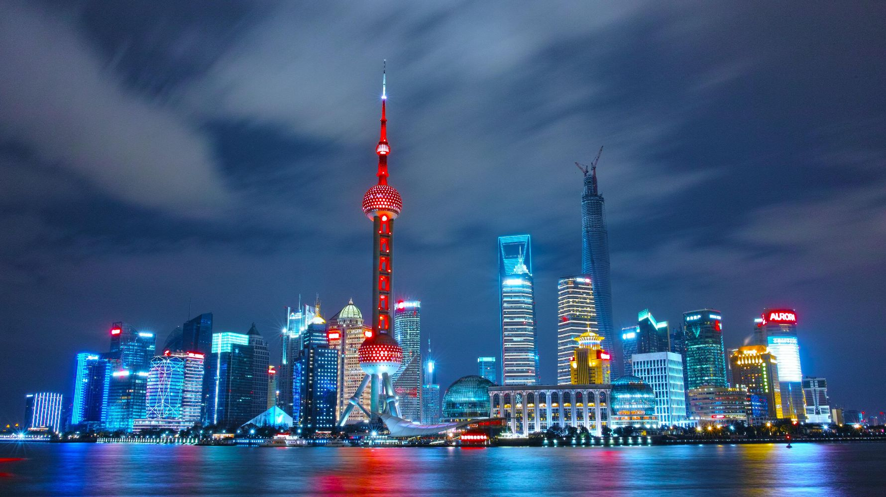
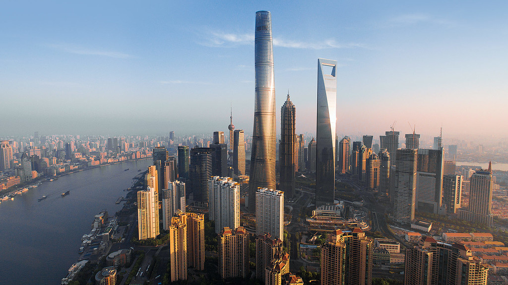

City: Shanghai (Chinese: 上海; Pinyin: Shànghǎi)
Country: China
- Population: 26,875,500 (2022)
- Landmarks:
- The Bund
- Jing'an Temple
- Yu Garden
- Climate: Humid Subtropical Climate
- Brief History of Shanghai:
- Shanghai is an ancient city that was first settled in year of 4000 BCE.
- During the 19th century, Shanghai was important domestic and foreign port due to its location.
- Since the economic reforms in the 1990s the city became a international trade and finance hub.
- Facts about Shanghai:
- The urban area of Shanghai is the most populous in the World.
- Shanghai has multiple nicknames such as "Paris of the East" and "Pearl of the Orient." In modern-day, Shanghai is also referred to as 魔都 (Módū) which means "Magical City."
- Shanghai is one of the largest metropolitan economies in the world and has major industries in Finance, Information Technology, Manufacturing, Real Estate, and Retail.
- Shanghai is located on the estuary of the Yangtze River.
- 
- 